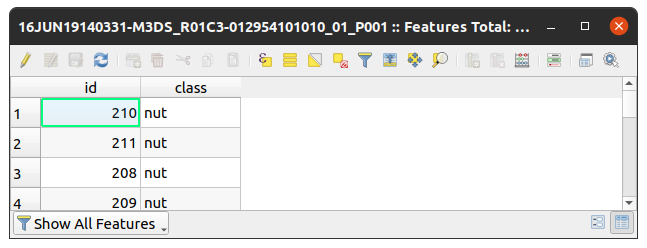

Installation¶
Configuration of Project Environment¶
Setting Python and virtual environment (Linux distribution)¶
First of all, check if you have installed the libraries needed:
sudo apt-get install python3-env
then, in the
python -m venv .venv
and activates it:
source .venv/bin/activate
as soon you have it done, you are ready to install the requirements.
Installing requirements.txt¶
If everything is correct, and you virtualenv is activated, execute:
pip install -r requirements.txt
The settings.py file¶
This file centralized all constants variable used in the code. Until now, only the constants below were required. The shapefiles usually has with it a attribute table, where the geographic geometry and metadata are stored:
This shapefile should have at least one column for the class name. The class name to be read is indicated by CLASS_NAME variable. This shapefile could also have multiple classes, for each one, a color should be specified. The values specified in CLASSES gives either the exact name of the class as its respective RGB color.
VALID_RASTER_EXTENSION = (".tif", ".tiff", ".TIF", ".TIFF")
VALID_VECTOR_EXTENSION = ".shp"
CLASS_NAME = 'class' # <---- column name in attribut table
CLASSES = {
"nut": [102, 153, 0],
"palm": [153, 255, 153]
}
annotation image after processing (with RGB color (102,153,0) for nut class):